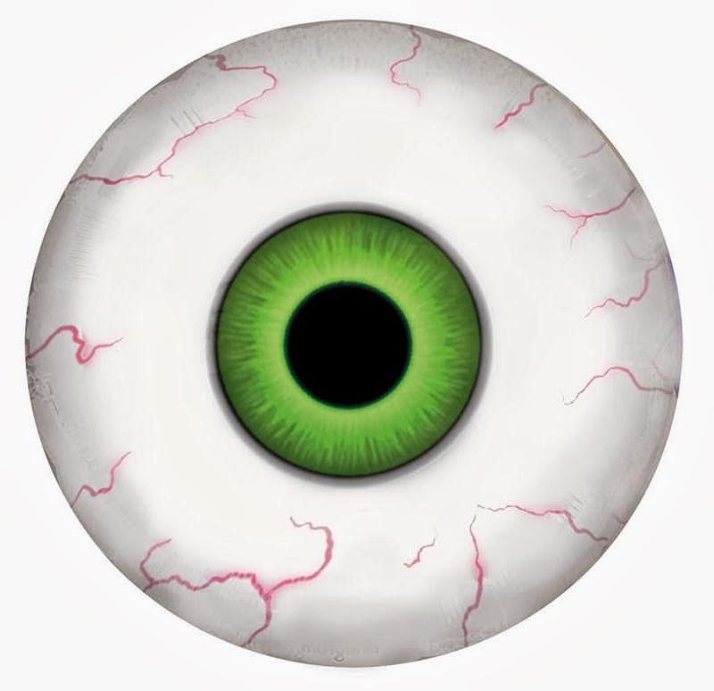

object-position con valores 50% 15%, lo que significa que el centro del objeto se coloca en el 50% del ancho y el 15% de la altura del contenedor, enfocando así la parte superior de la imagen.
Ejemplo object-position 50% 15%

object-position con valores 50% 15%, lo que significa que el centro del objeto se coloca en el 50% del ancho y el 15% de la altura del contenedor, enfocando así la parte superior de la imagen.
